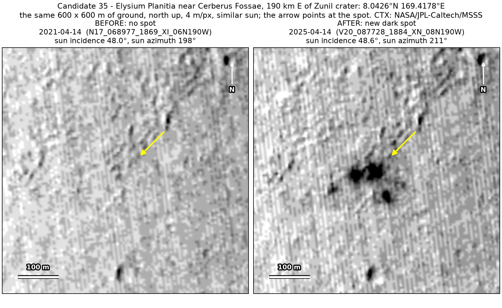
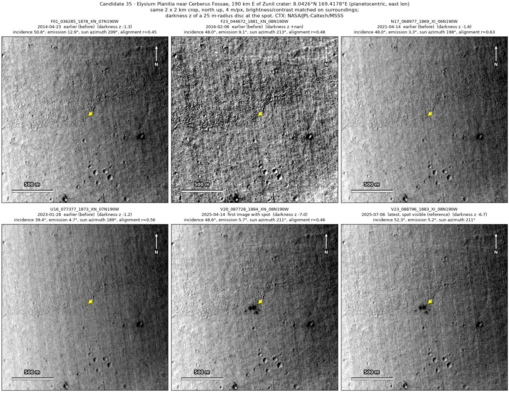
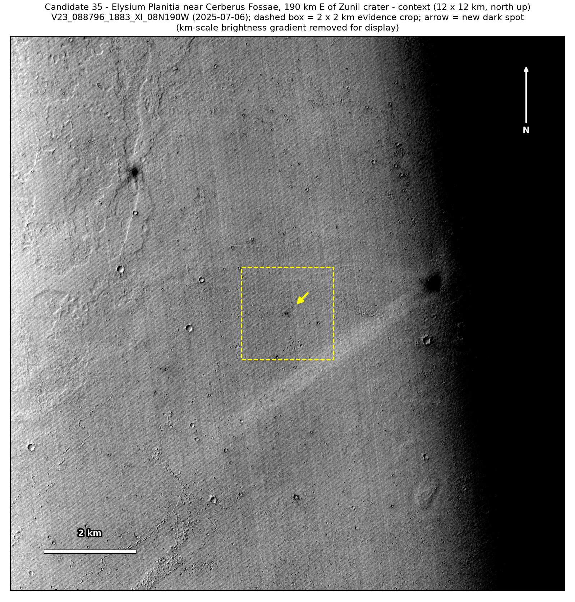
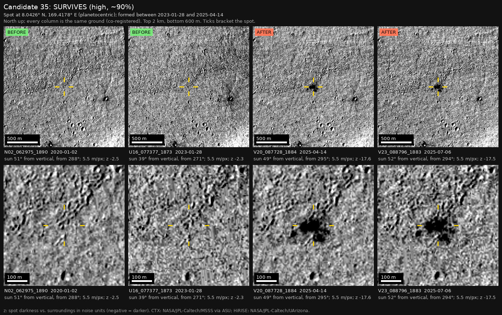

Professor of Mathematics
Paata Ivanisvili
Department of Mathematics, University of California, Irvine

← Possible new impact sites on Mars
Candidate 35: Elysium Planitia, east of Zunil crater
Strong · roughly 90%

What changed. A cluster of four or five dark blobs within about 120 by 100 m, the largest about 50 m across, appeared on the plains of Elysium Planitia east of Zunil crater, between January 2023 and April 2025. It has the same pattern in April and July 2025, on two orbits.
Why it may be a new impact. Ten earlier images, from 2007 to January 2023, show no cluster, and each of them would have shown it; five were taken under the same sun as the two recent ones. Several separate blobs appearing together are the classic pattern of a meteoroid that broke up in the air.
- Location
- 8.043° N, 169.418° E
- Absent
- ten images from 21 May 2007 to 28 January 2023
- Present
- 14 April 2025 and 6 July 2025
- Size
- Four or five dark blobs within about 120 × 100 m, the largest about 50 m across
- Confidence
- Strong candidate; roughly 90% that it is a new impact.
- Caveat
- It has been followed for only three months, so a short-lived dark patch made by wind is not excluded, although wind would not usually make a tight cluster of round blobs on ground that did not change from 2007 to 2023. It lies in the area of a catalogue of new impacts near the InSight lander (Bickel et al. 2025) that could not be downloaded, but it formed after the period that catalogue covers. It lies outside every footprint of the high-resolution HiRISE camera. Like every candidate here, it is unconfirmed: see the caveat.


